A portrait painting of a person wearing a turban and a pearl earring. She has light skin and black eyes. She looks on to the viewers while turning her body towards the left of the canvas. The turban is blue with a long beige cloth hanging from the back of her head. Her shirt is brown. The background is black.

A 6-panel folding screen with an image of seven cranes standing. Cranes are either standing straight, looking down, or looking back. Their bodies are mostly white and partly black. The background is light brown. The screen has brown border with small floral pattern.

A sketch of various body parts of a lion. On the upper half of the page, there is a profile of a lion sitting. The head of the lion is missing. The lower half has lion's paw, feet, legs, and face.
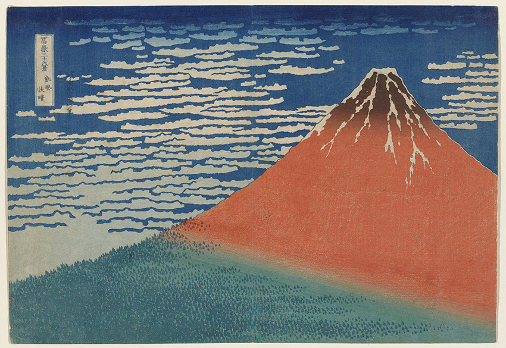
A woodblock print of a mountain with a single peak. The mountain is on the right side occupying about half of the canvas. The color of the mountain is red brown. The tip of the mountain is dark brown with white cracks. The lower part of the mountain is green. The sky is blue with small, scattered pieces of clouds.

A white plaster sculpture in sitting position while resting his chin on one hand. The figure is naked and his body is muscular.

A painting of a bundle of cattails on brown paper. A nest made with dried grass is in the middle of the cattails. The background is light brown.

A drawing of a fruit bowl. There are four different fruits in similar size. The bowl has a base. Everything is drawn with simple black strokes.

A painting of a person covering ears with both hands. His eyes and mouth are wide open. The figure is on the bridge, facing the viewers. The background is undulating with the colors of red, blue and green.

A painting of a train station. Inside of the station is dark. On the left side of the canvas, you can see the front view of a black train. A crowd of people is in the rest of the area. The ceiling of the station is very high and there is a large open entrance in the background. You can see the outside through the entrance.
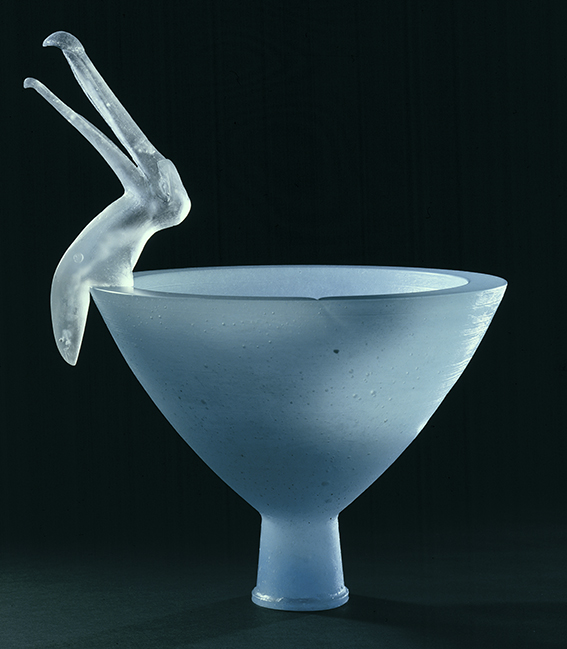
A light blue glass bowl with the shape of a bird's head on one side. The bowl has a short, narrow base. The bird's head hangs on the top of the bowl. The long beak of the bird is opened and facing upward.

An abstract painting composed with black straight lines and primary colors. The canvas is square and divided in irregular grid. Each cell has different proportion. The cells are mostly white and some are red, blue and yellow.

A photograph of three women wearing black dresses. They look towards the viewer. One person is standing in the middle and the other two are sitting right in front, side by side. The black dress has a white collar. The background is light brown.

A light gray porcelain bowl. The rim is wide and the base is narrow. The surface is uneven and has diagonal flares.

A black button with two wide yellow stripes. ‘GIVE WOMEN THE VOTE’ is written on the yellow parts. Letters are black and capitalized.

A Landscape painting of a golden field. There are dozens of straw piles across the field. Houses and windmills are in the background. The sky is light gray.
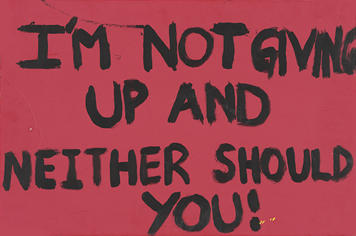
A red poster filled with bold black hand writing. It says ‘I'M NOT GIVING UP AND NEITHER SHOULD YOU!’. The letters are capitalized.

A bust of a man with beard. He has light skin and dark brown hair. The figure is naked. He looks towards the right.

An illustration of a light gray rabbit standing on two legs in profile. There is a brown rock behind the rabbit. Some trees are in the distance.

A dusty black box with built-in drawers. One side of the box is open, revealing the drawers. The drawers are silver. Three bottom drawers are half opened. The box has a handle on the top.

A light purple landscape painting. The subject is blurry and unclear. The right side of the canvas is lighter than the left.

A painting of a woman and a child looking at each other. The child is leaning on the woman. The woman looks down at the child and the child looks up. The woman is wearing a light pink dress and the child is naked. They are briefly painted with watercolor.

A drawing of a woman standing on a pole. She is showing her back and holding the parallel pole above with both hands. She is wearing a leotard. The subjects are drawn with contour lines and light colors.

An etching of a scene with five cats and a bird. The cats are surrounding a bird on the ground. A cat is holding the bird with one paw. Other two are watching. In the background, there are two more cats showing their backs. Fine black lines are used to show texture and shade.

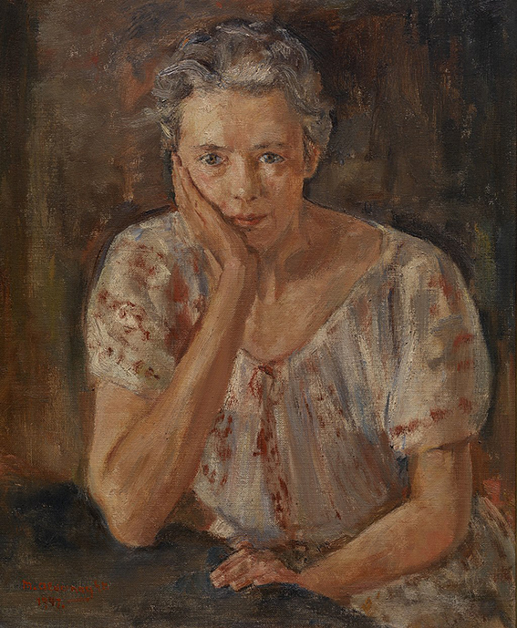
A portrait painting of a woman resting her chin on one hand. She looks on to the viewer. She has short gray hair and medium light skin. She is wearing a white dress. The background is dark brown.
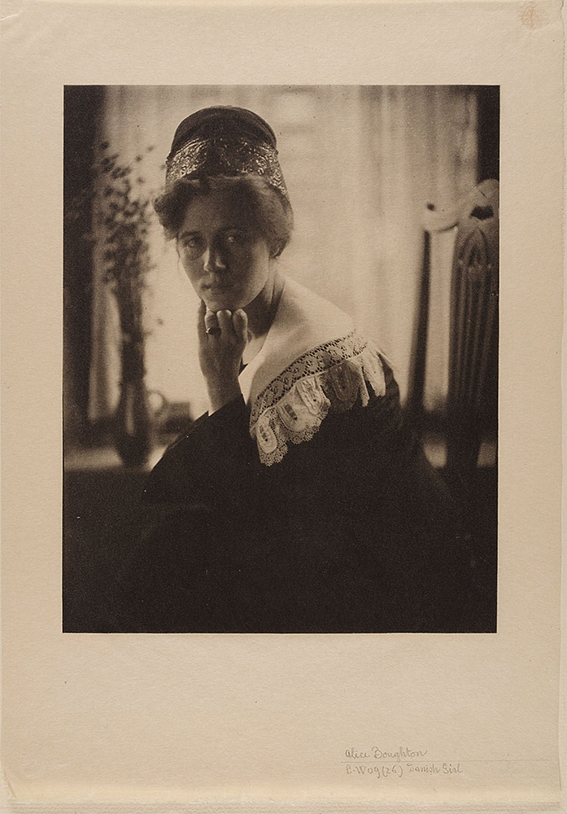
A black and white photograph of a woman wearing a hat. She looks on to the viewer. She is resting her chin on one hand. She is wearing a dress with big white laced collar.

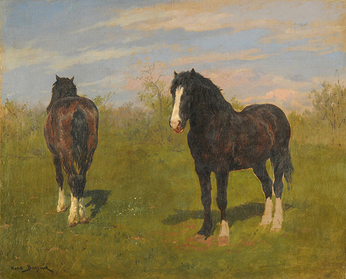
A painting of two brown horses standing on the green grass field. One is turned back and the other is in profile. The sky is light blue with some clouds.
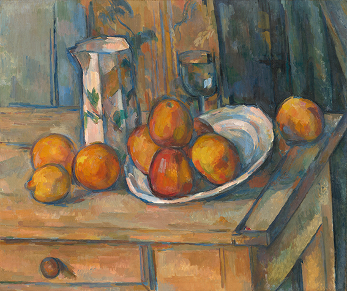
A still life painting with fruits on a wooden table. The fruits are round and orange. Some are on a white plate and some are around. There are a milk jug and a glass behind the plate.
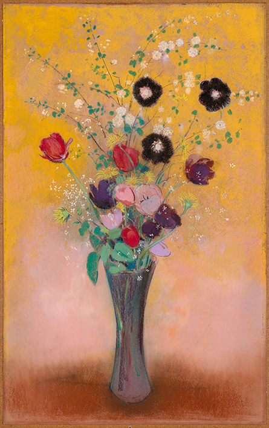
A painting of a vase with assorted flowers. Flowers are red, pink, purple, black, yellow and white. The vase is tall and narrow. The background is mainly yellow.
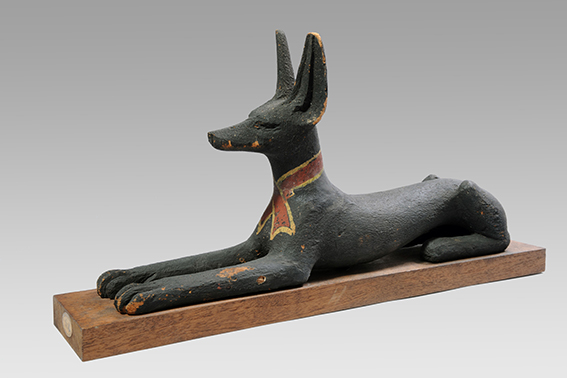
A statue of a slim black dog reclining. It has its big ears pricked up and long front legs stretched forward. There is a red ribbon painted around the neck. The statue is on a low wooden pedestal.
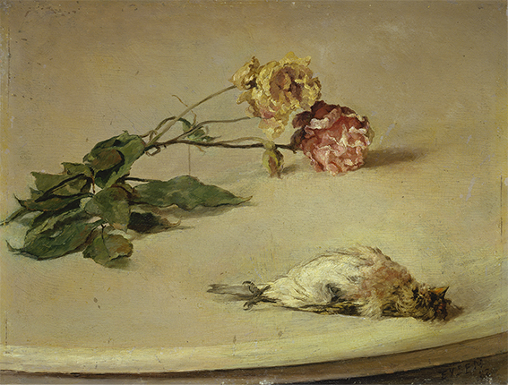
A still life painting of two dried roses and a dead bird. One of the flowers is yellow and the other is pink. Some green leaves are on the stems. A small beige bird is lying with its stomach showing. The background is beige.
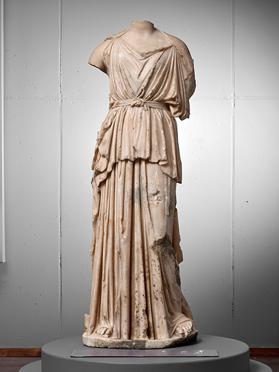
A standing marble statue. The head and arms are missing. The clothes are draped over the shoulders and around the body. The marble is cream colored.
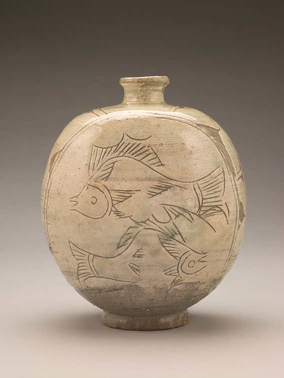
A stoneware flask with an engraving of two fish. The body of the flask is round and bottleneck and the base are short and narrow. The fish are drawn with simple lines. The two are facing the opposite direction.